A toon shader for Unreal Engine 5 that turns a normal, realistic scene into an illustration without touching a single asset. Lighting falls into clean bands, shadows fill with pencil cross hatching that sticks to surfaces, and ink lines trace every silhouette, thinning as objects move away.
It's one post-process material. Textures, normal maps, roughness and metalness all stay intact, because only the light gets stylised, never the surface. It works with Lumen, Virtual Shadow Maps, Substrate and every light type, and it's on Fab with four look presets and an overview level.
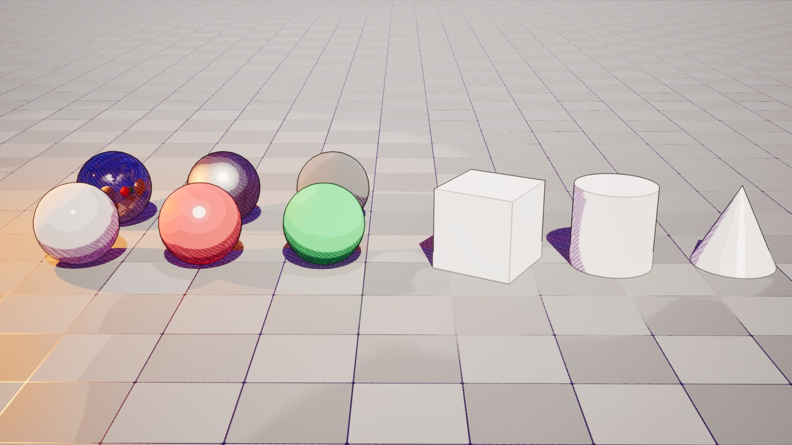
How it fits together
Unreal renders the scene as usual. Before glass, particles and depth of field are drawn, the material reads the finished image along with the buffers Unreal keeps for every pixel: surface colour, reflectivity, roughness, normal and depth. From those it rebuilds the image in stages, and each stage hands a named result to the next.
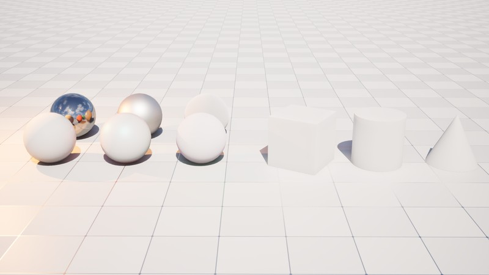
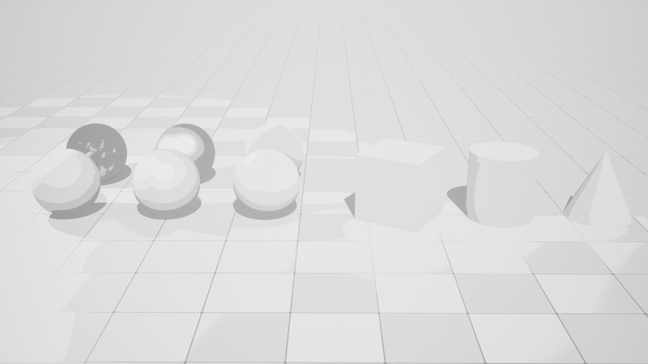
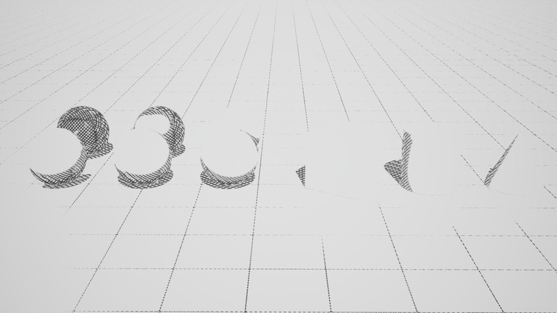
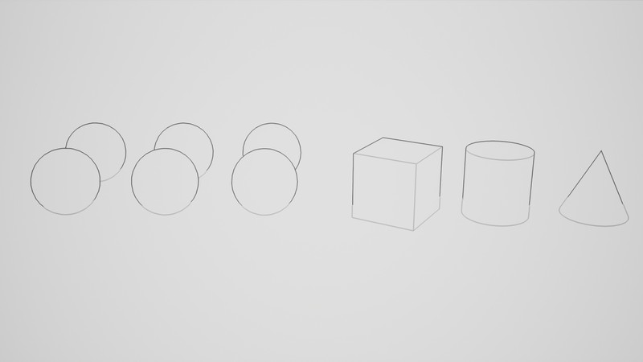
Why it's built this way
- Post-process only
- I first planned a pair: a post-process plus a surface material on every asset. A single post-process works on any project without touching its materials, which is what a Fab buyer expects. The cost is that glass and particles aren't in the buffers it reads, so they stay realistic.
- Before depth of field
- The pass runs after opaque lighting and before glass, particles and depth of field. Glass then refracts the already-stylised world, out-of-focus areas blur the lines naturally, and temporal anti-aliasing smooths the lines with the rest of the frame.
- Extract light, don't relight
- A custom shading model would band each light properly, but it needs an engine source build, and a Fab content pack can't ship one. Dividing the image by reflectance keeps every light type, real shadows and Lumen working.
- Named stages
- Every stage ends in a named reroute, like Lighting, BandLevel or HatchMask, and twelve small custom HLSL nodes each do one job. A stage can be read, debugged or replaced without following wires across the graph.
Pulling the light out
A toon shader usually needs its own lighting model. In a post-process, the light has already been calculated, so instead the shader takes it back out. Every lit pixel is roughly its surface colour times the light that reached it, plus a reflection. Dividing the image by how much the surface reflects leaves just the light: shadows, light colour and falloff, with the textures gone.
Lighting = SceneColor ÷ max(Albedo + w × Spec, 0.02) Spec = F0 × A + B A and B: Karis' fitted curve, from roughness and N·V w = lerp(0.5, 1, metal) metal = saturate((max(F0) − 0.08) ÷ 0.42) how metallic, read from the specular colour
Dividing by the surface colour alone isn't enough. Metals have almost no surface colour, and dark materials still reflect a little, so their reflections came out as bright glowing lines on the floor's dark grid. The fix was to divide by the total reflectance: surface colour plus how much the surface reflects at that angle and roughness, using Epic's fitted Fresnel curve. That one change made metals behave and removed the leak.
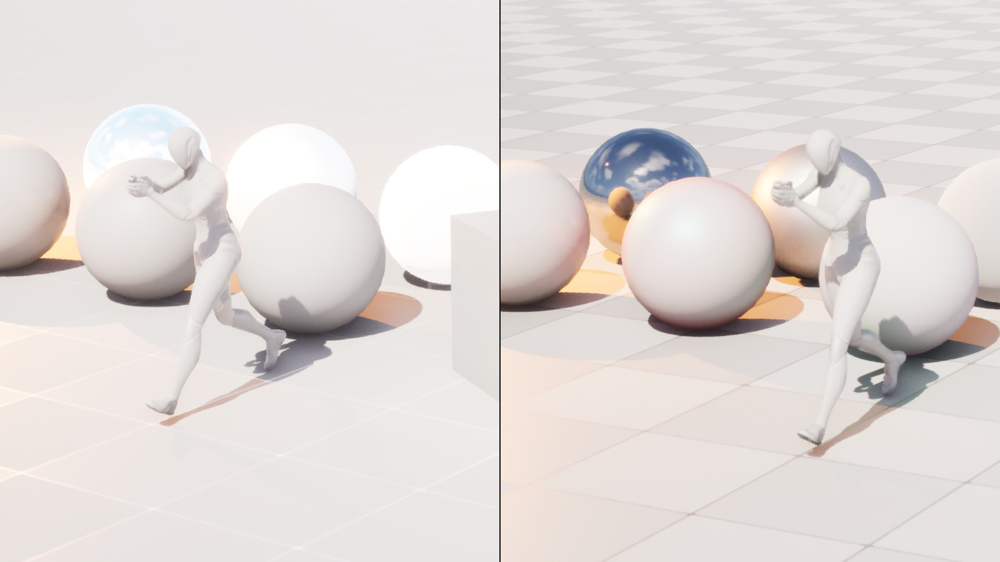
Hatching later exposed a limit of taking light out of a finished image. Seen at a shallow angle, the floor reflects mostly sky, which is far dimmer than the sun. Dividing by the full reflectance assumed the reflection was as bright as the sun, so dark tiles came out too dark, dropped a band and got hatched in full sunlight. That's what the weight w is for: non-metals count only half their reflection, while metals, where reflection is all there is, count all of it.
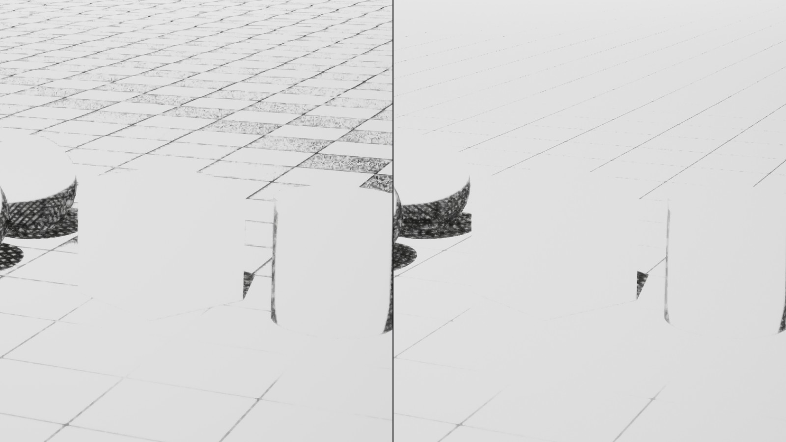
Why it's built this way
- Total reflectance, not albedo
- Albedo alone has no answer for metals and shiny dark surfaces, whose light is almost all reflection. Adding the reflectance from the GBuffer's specular colour, roughness and normal accounts for both without a second pass.
- A floor of 0.02
- Near-black albedo would make the division explode into noise. Clamping it keeps the result stable, and the colour is multiplied back by the same clamped value later, so dark textures stay exactly as dark as authored.
- Half the reflection for non-metals
- The extraction can't tell sunlight from a sky reflection. Counting half trades false shadow bands, which show badly, for slightly over-bright surfaces, which never show, because nothing above full light is drawn differently.
- Metalness from the specular colour
- Metals have a specular colour far above the roughly 0.04 of non-metals, so how metallic a pixel is can be read from the same specular colour the reflectance already uses, with no extra buffer read.
Bands and shadows
The extracted light is measured by brightness, scaled so that 1.0 means fully lit, and split into steps. Only the brightness is banded, so a warm lamp stays warm. The surface colour is then multiplied back in, which is why every texture survives untouched.
Y = dot(Lighting, (0.2126, 0.7152, 0.0722)) ÷ LightRef brightness, 1 = fully lit t = Y × N − 0.5 N bands, 1 to 8 h = clamp(Softness ÷ 2, fwidth(t), 0.5) Band = (floor(t) + 1 + smoothstep(0.5 − h, 0.5 + h, frac(t))) ÷ N Shade = lerp(Ambient, 1, Band) Hue = Lighting ÷ max(Y × LightRef, 0.0001) the light's colour at brightness 1 Diffuse = Albedo × Hue × Shade × LightRef
The first pass exposed a problem the realistic image hid. Lumen's bounce light is slightly noisy, and banding turns every flicker across a threshold into a hard edge, so contact shadows grew hairy fringes. Halving the bounce light and raising Lumen's quality calmed it. The darkest band is then lifted to an ambient level instead of being clipped, and shadows gain saturation rather than turning grey, a painter's trick that all of my references lean on.
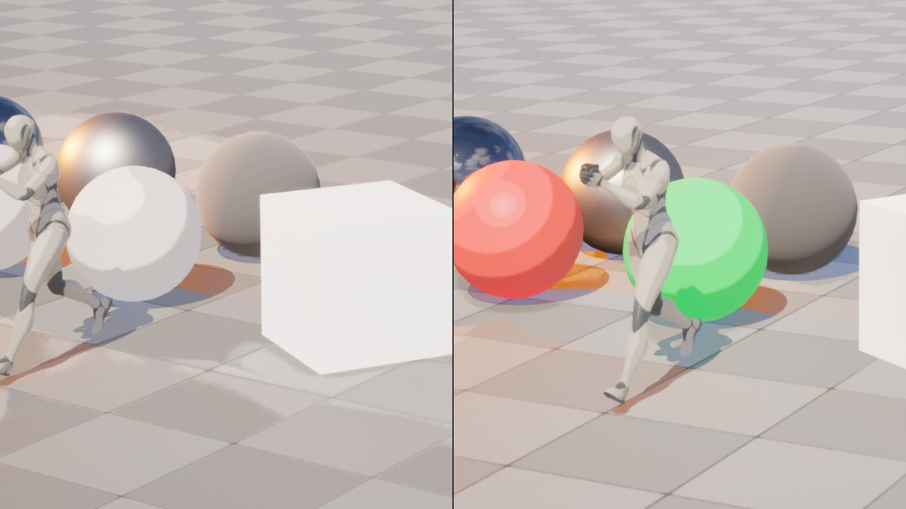
Why it's built this way
- Band brightness, not colour
- Banding each colour channel separately would posterise coloured lights into odd hues. Banding brightness and putting the light's own colour back keeps a warm lamp warm and a blue sky fill blue.
- One-pixel edges
- fwidth measures how much the band value changes across one pixel, so even a band softness of zero gives an edge exactly one pixel wide. Hard bands never stair-step, at any resolution.
- Bands above full light
- Light brighter than 1, under a strong point light for example, keeps adding bands instead of clipping, so a bright light still reads as brighter.
- A remap, not a clip
- Clamping the darkest band to an ambient level would merge the lower bands into one. Remapping 0 to 1 onto Ambient to 1 keeps every band distinct.
- Saturated shadows
- Shadows that are only darkened go grey and muddy. Each pixel's shadow amount comes from its band, and saturation and an optional tint are pushed by that amount.
Reflections and metals
The image is rebuilt in two parts. The diffuse part is the surface colour times the banded light. The reflection part is the reflectance times a blend of banded and original light, set by a Reflection Detail slider: at 0, chrome turns into flat graphic shapes, and at 1, it keeps full reflection detail. Roughness and metalness stay visible either way.
BandedReflection = Hue × Band × LightRef no ambient lift
Reflection = Spec × lerp(BandedReflection, Lighting, ReflectionDetail)
Output = Diffuse + Reflection
My first version banded reflections with the same light as the diffuse part, ambient lift included. Lifting the dark parts of a reflection toward grey killed its contrast and made chrome look milky. Reflections now get their own banded light without the lift.
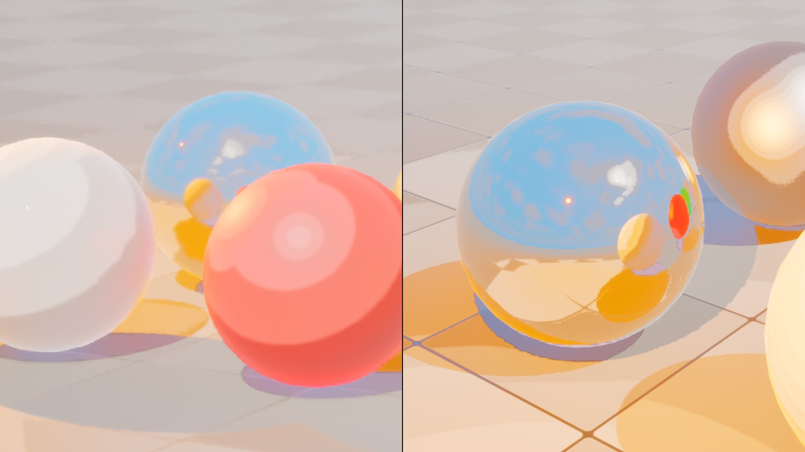
On top sits a stylised sun highlight: a hard-edged shape whose size follows roughness, tinted by the metal's own colour and shown only in the lit band. A post-process doesn't know where the lights are, so the sun's direction and colour are read from the Sky Atmosphere. That updates live in the editor and in cinematics, with a manual yaw and pitch for levels without an atmosphere.
Why it's built this way
- Reflection Detail as a slider
- Some styles want graphic, poster-like chrome and others want readable reflections. A blend between banded and original light covers both with one control, and roughness and metalness keep showing in either.
- Sun from the atmosphere
- I planned a helper Blueprint to pass the sun's direction in. Reading it from the Sky Atmosphere in the material updates live in the editor and in Sequencer and needs no setup, with an explicit manual switch instead of guessing when the atmosphere has no sun.
- Highlight only in the lit band
- A hard highlight inside a shadow band reads as a mistake, so the highlight is masked to fully lit pixels.
- Rim on silhouettes
- A standard Fresnel rim lights the whole floor near the horizon. The rim reuses the outline search to light a band inside real silhouettes only. It's off by default, and switched off it costs nothing.
Hatching
The hatching is drawn in world space. Each pixel's position is rebuilt from depth, and lines are projected from the three world axes and blended by the surface's direction, so they need no UVs and stay put as the camera moves. Which lines appear comes from the bands: one band below full light gets single lines, deeper bands add crossing sets, so hatch edges line up exactly with band edges. A packed pencil texture breaks up the strokes, and a boil setting redraws them a few times a second, like hand-drawn animation.
weights = |N|^Sharpness, normalised one projection per world axis steps = (1 − Band) × N bands below full light · 1 = single lines, more = crossings footprint = one pixel's size along this set of lines from ddx and ddy of world position level = log2(SpacingPx × footprint ÷ Spacing) s0 = Spacing × 2^floor(level), s1 = 2 × s0, blended by frac(level) d = |frac(c ÷ s + 0.5) − 0.5| × s distance to the nearest line ink = saturate((HalfWidth − d) ÷ footprint + 0.5) hatch = max over the three projections
Line density stays constant on screen. Spacing works in powers of two: when the camera pulls back, every other line fades out, and the lines that stay are the same ones, so nothing slides. The first version was faint and grey for two reasons. On curved surfaces it averaged two projections, drawing both at half strength, and on the floor it treated every surface as if it faced the camera, so the squashed lines on a shallow floor faded to grey to avoid shimmer. Each set of lines now measures how squashed it really is on screen and picks its own spacing, and projections combine by taking the strongest.
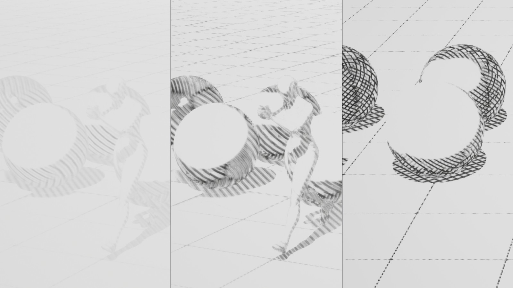
Why it's built this way
- Anchored to the world
- Screen-space hatching is cheap but swims over surfaces whenever the camera moves, which reads as a filter laid on top. Lines fixed in world space look drawn on the objects.
- Powers of two
- Halving or doubling the spacing keeps every other line where it was, so as the camera moves, lines fade in and out between existing ones instead of sliding.
- A footprint per set of lines
- One pixel covers much more floor along the view direction than across it. Measuring the footprint along each set's own direction keeps lines on a shallow floor crisp instead of grey.
- Strongest projection wins
- Averaging the three projections drew overlapping lines at half strength. Taking the strongest keeps ink solid, at the price of a little extra crossing where projections meet.
- Grain at both octaves
- The pencil texture is sampled at both spacings and blended the same way as the lines, with its mip level chosen by hand, so the grain neither pops nor shimmers when the spacing changes.
Outlines
A silhouette is a jump in depth. Comparing neighbouring depths fails on floors seen at a low angle, where depth grows fast with no edge at all. Instead, each pixel predicts the plane its surface lies on and draws a line only where a nearby pixel is clearly farther than that prediction. The prediction works in one over depth, which changes in a straight line across any flat surface on screen, so floors and walls at any angle produce no false lines.
i = 1 ÷ depth linear across any flat surface on screen gx, gy = slope of i, from the gentler side of each axis iP = i0 + gx × ox + gy × oy predicted at an offset (ox, oy) edge = iS < iP × (1 − Threshold) 8 directions per ring, rings out to the width t = smoothstep(saturate(log(dist ÷ Near) ÷ log(Far ÷ Near))) W = lerp(WidthNear, WidthFar, t) × ScreenHeight ÷ 1080 ink = edge × saturate(W) lines under a pixel fade instead of breaking up
Width is set in pixels at 1080p and scaled to the real resolution. It thins between a near and a far distance on a log scale, so going from 3 to 6 metres changes the width as much as going from 30 to 60, and it's clamped at both ends. Crease lines come from the same search: where surface normals turn sharper than a set angle, a thinner line is drawn centred on the edge, which also closes the gap where objects meet the floor.
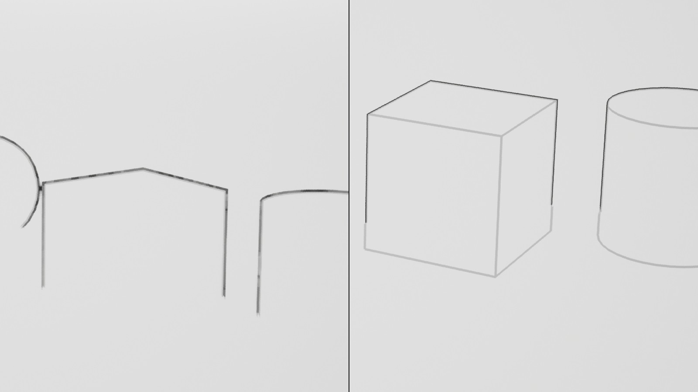
Why it's built this way
- Depth plane test
- A plain depth difference needs a threshold that's either too loose for floors or too tight for small steps. Predicting each pixel's plane gives exact predictions on flat surfaces, so silhouettes need only one threshold and floors never get false lines.
- The gentler side
- A pixel right at an edge would measure its slope across the gap. Taking the gentler of its two neighbours on each axis makes it measure its own surface.
- Lines on the near side
- A line is drawn on the pixel whose neighbour is farther, so it belongs to the object in front, which is where an illustrator would put it.
- Rings, rotated
- The search checks rings of 8 samples out to the line width, with every other ring turned 22.5 degrees so wide lines have no gaps. It's capped at 16 pixels and stops as soon as a pixel is fully inked.
- 1080p pixels, log distance
- Widths in 1080p pixels look the same at 4K. A log scale makes the thinning feel even to the eye, where a linear blend would thin everything close to the camera and then barely change.
Per-object control
Any actor can opt out of parts of the effect through its Custom Stencil value. The values are flags, added together, so one number sets several switches. Nothing changes unless an artist tags an object, which matters for a product dropped into other people's projects.
- 1
- No toon shading. The object keeps realistic lighting but can still be outlined.
- 2
- No hatching.
- 4
- No outlines.
- 8
- Foliage: thinner lines and no creases, so leaves don't turn into a tangle of ink.
- 16 to 240
- Object ID. A line is drawn wherever two different IDs meet, even where they touch with no depth gap or angle, like a hand holding a prop.
Why it's built this way
- Stencil flags
- One stencil value per actor holds several switches and an object ID, so mixing realistic and toon objects, foliage and touching props needs no extra materials and no changes to anyone's assets.
Presets
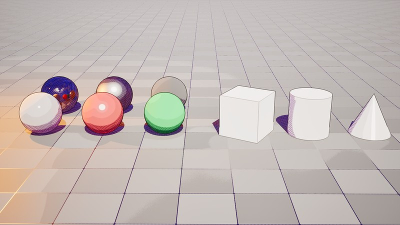
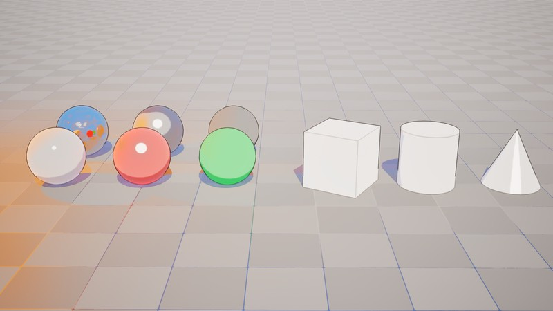
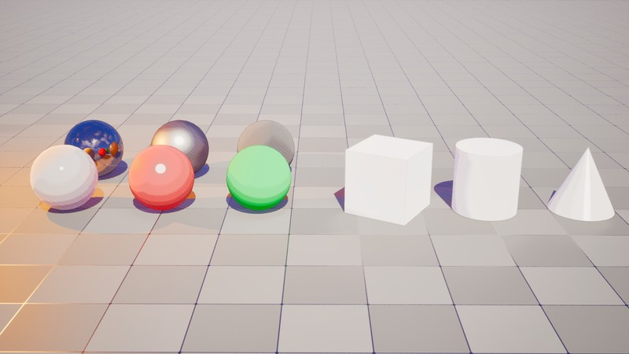
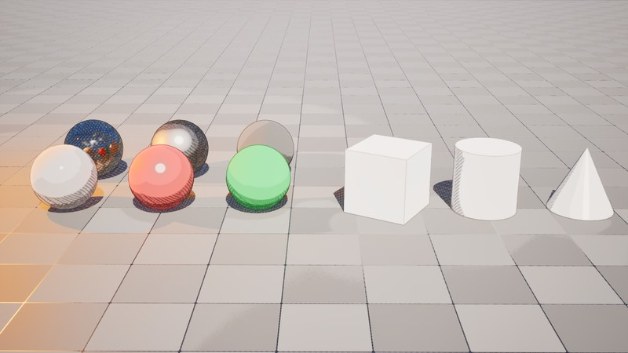
Material graph and parameters
The graph uses named reroutes, so every signal has a name, like Lighting, BandLevel or HatchMask, and wires never cross the graph. The heavy lifting sits in twelve small custom HLSL nodes, each doing one job, and everything an artist would tune is a parameter, grouped in pipeline order with a tooltip on each.
A Debug View parameter shows any stage on its own: the extracted light, a calibration view that marks anything above full light in red, the bands, reflectance, the sun direction, the highlight, the hatching, the lines and the rim. It made every problem on this page visible, and it doubles as a breakdown tool for anyone using the shader.
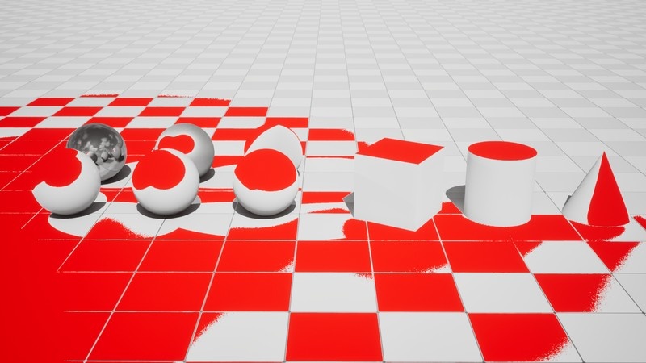
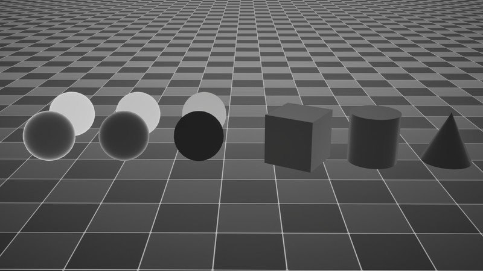
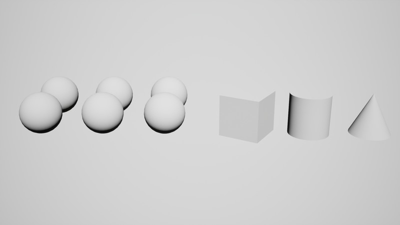
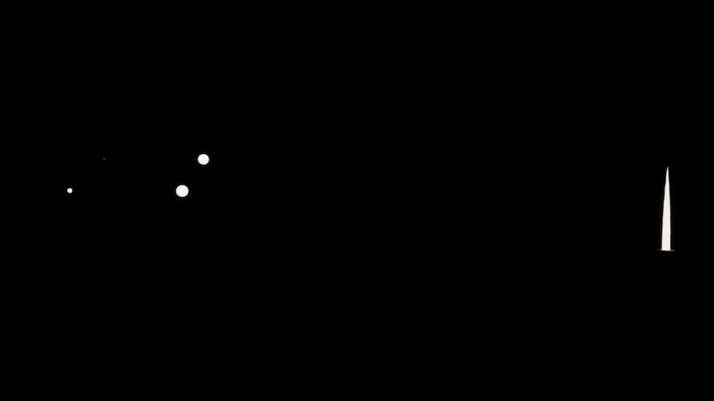
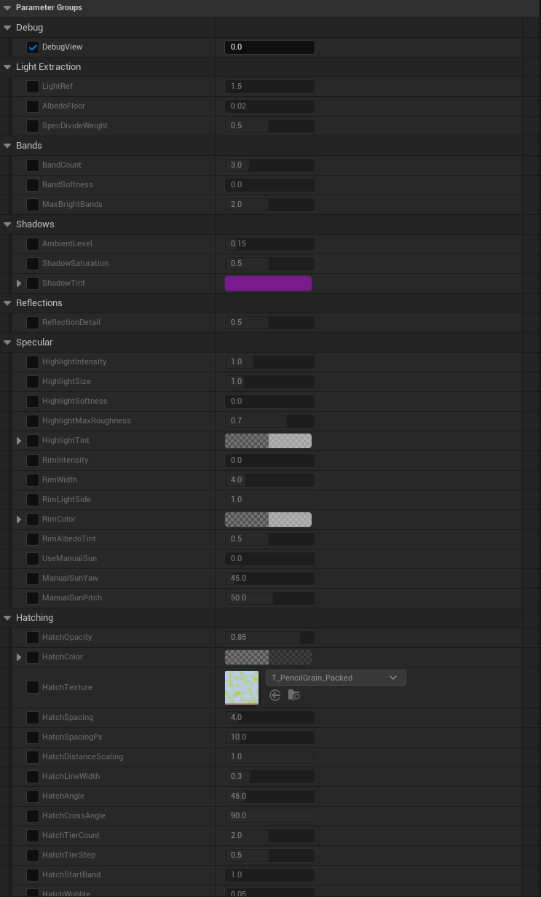
Performance
- 0.17 ms at about 1.3 million pixels
- ~0.5 ms at 1440p
- ~1.1 ms at 4K
- 16 px longest outline search
The figures are for the whole pass, measured on my machine. The outline search stops as soon as a pixel is fully inked and is capped at 16 pixels, hatch projections with almost no weight are skipped, and features that are switched off skip their texture reads.
Known limits
Glass and particles render realistically on top of the toon world. Hatching is anchored to the world, so on a moving, textured character the surface slides under the lines; boil hides most of it. Very dark textures under strong reflections can still drop a band, and they're best checked with the calibration view.
Credit
Built by me in Unreal Engine 5.8, node by node, as a project to learn Unreal's post-process pipeline. The shader maths and HLSL were developed with AI assistance, and every step was wired, tested and tuned by me in the editor.